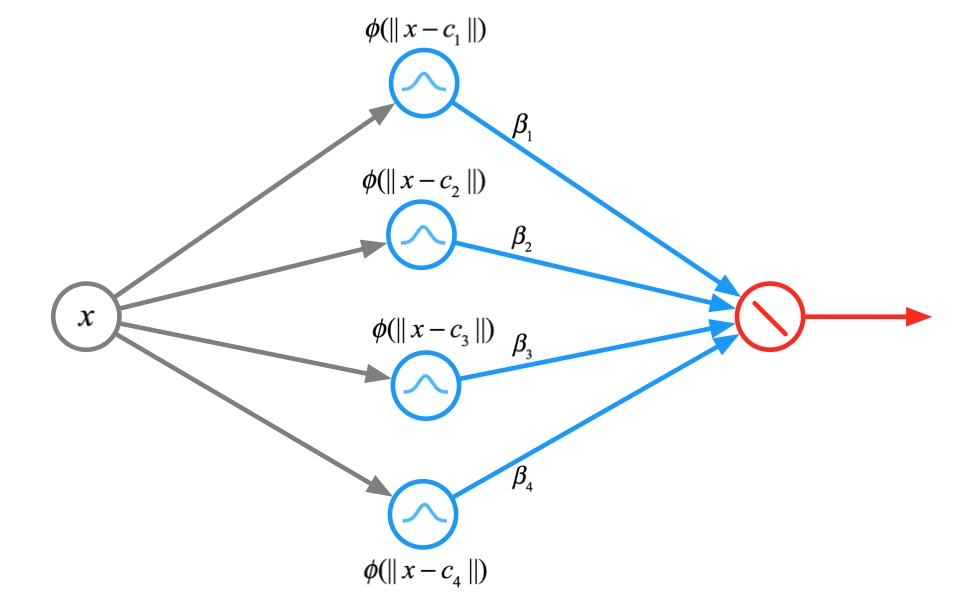

RBF径向基网络全称是 Radical basis function network；RBF network，是一种常见的人工神经网络；在径向基网络先介绍径向基函数（RBF）。
径向基函数RBF
径向基函数是某种沿径向对称的标量函数。通常定义为空间中任一点 \(x\) 到某一中心 \(x_c\) 之间欧氏距离的单调函数，可记作 \(\phi(||x-x_c||)\)，其作用往往是局部的 , 即当 \(x\) 远离 \(x_c\) 时函数取值很小。径向基函数的一般形式为
\[
\phi = \exp\big(-(x-x_c)^2\big)
\]
其中 \(x_c\) 为核函数中心，最常用的径向基函数是高斯核函数，形式为
\[
\phi(||x-x_c||)=\exp\bigg(-\frac{||x-x_c||^2}{2\sigma^2}\bigg) = RBF(x,x_c)
\]
其中 \(\sigma\) 为函数的宽度参数，控制了函数的径向作用范围。如果 \(x\) 和 \(x_c\) 很相近那么核函数值为1，如果 \(x\) 和 \(x_c\) 相差很大那么核函数值约等于0。由于这个函数类似于高斯分布，因此也称为高斯核函数。它能够把原始特征映射到无穷维。

上图形象说明离中心点越远，函数值越小；距离值超过一定值后，函数值几乎为0。
简单说明一下为什么采样RBF函数的神经网络学习收敛得比较快。当网络的一个或多个可调参数（权值或阈值）对任何一个输出都有影响时，这样的网络称为全局逼近网络。由于对于每次输入，网络上的每一个权值都要调整，从而导致全局逼近网络的学习速度很慢。BP网络就是一个典型的例子。
如果对于输入空间的某个局部区域只有少数几个连接权值影响输出，大多数连接权重由于和中心点距离远，影响几乎为0，则该网络称为局部逼近网络。常见的局部逼近网络有RBF网络、小脑模型（CMAC）网络、B样条网络等。
径向基神经网络
RBF神经网络，属于前向神经网络类型，它能够以任意精度逼近任意连续函数，特别适合于解决分类问题。
RBF网络的结构与多层前向网络类似，它是一种三层前向网络。第一层为输入层，由信号源结点组成；第二层为隐含层，隐单元数视所描述问题的需要而定，隐单元的变换函数是RBF径向基函数，它是对中心点径向对称且衰减的非负非线性函数；第三层为输出层，它对输入模式的作用作出响应。从输人空间到隐含层空间的变换是非线性的，而从隐含层空间到输出层空间变换是线性的。

RBF网络的基本思想是：用RBF作为隐单元的“基”构成隐含层空间，这样就可将输入矢量直接（即不需要通过权连接）映射到隐空间。根据Cover定理，低维空间不可分的数据到了高维空间会更有可能变得可分。换句话来说，RBF网络的隐层的功能就是将低维空间的输入通过非线性函数映射到一个高维空间。然后再在这个高维空间进行曲线的拟合。它等价于在一个隐含的高维空间寻找一个能最佳拟合训练数据的表面。这点与普通的多层感知机MLP是不同的。
当RBF的中心点确定以后，这种映射关系也就确定了。而隐含层空间到输出空间的映射是线性的，即网络的输出是隐单元输出的线性加权和，此处的权即为网络可调参数。由此可见，从总体上看，网络由输入到输出的映射是非线性的，而网络输出对可调参数而言却又是线性的。这样网络的权就可由线性方程组直接解出，从而大大加快学习速度并具有全局逼近能力，从根本上解决了BP网络的局部最优问题。
在理论上，RBF网络和BP网络一样能以任意精度逼近任何非线性函数。但由于它们使用的激励函数不同，其逼近性能也不相同。Poggio和Girosi已经证明，RBF网络是连续函数的最佳逼近，而BP网络不是。BP网络使用的Sigmoid函数具有全局特性，它在输入值的很大范围内每个节点都对输出值产生影响，并且激励函数在输入值的很大范围内相互重叠，因而相互影响，因此BP网络训练过程很长。此外，由于BP算法采用梯度下降法，训练时间常，容易陷入局部极小的问题不可能从根本上避免，并且BP网络隐层节点数目的确定依赖于经验和试凑，很难得到最优网络。采用局部激励函数的RBF网络在很大程度上克服了上述缺点，RBF不仅有良好的泛化能力，而且对于每个输入值，只有很少几个节点具有非零激励值，因此只需很少部分节点及权值改变。学习速度可以比通常的BP算法提高上千倍,容易适应新数据，其隐层节点的数目也在训练过程中确定，并且其收敛性也较BP网络易于保证，因此可以得到最优解。
从另一个方面也可以这样理解，多层感知器（包括BP神经网络）的隐节点基函数采用线性函数，激活函数则采用Sigmoid函数或硬极限函数。而RBF网络的隐节点的基函数采用距离函数（如欧氏距离），并使用径向基函数（如Gaussian函数）作为激活函数。径向基函数关于n维空间的一个中心点具有径向对称性，而且神经元的输入离该中心点越远，神经元的激活程度就越低。隐节点的这一特性常被称为“局部特性”。
\[
g_{RBF}(x_j) = \text{Output}\bigg(\sum_{i=1}^{|h|} w_{ij} \exp\Big(-\frac{||x_i - x_{c_i}||} {2\sigma^2}\Big) + b_{i}\bigg),j=1,2,...,M
\]
其中 \(|h|\) 表示隐藏层个数，也代表选取中心点的个数，\(M\) 表示输出层个数，\(\sigma\) 表示方差，\(w\) 则是对应的权重。最外层的 \(\text{Output}\) 函数则是根据目的选择不同的函数，如果想做分类的话就可以使用 softmax 或sign等函数，如果打算做回归或函数逼近就不用 \(\text{Output}\) 函数了，RBF Network 可以逼近任意连续的函数。
RBF的设计主要包括两个方面，一个是结构设计，也就是说隐藏层含有几个节点合适。另一个就是参数设计，也就是对网络各参数进行求解。由上面的输入到输出的网络映射函数公式可以看到，网络的参数主要包括三种：径向基函数的中心、方差和隐含层到输出层的权值。到目前为止，出现了很多求解这三种参数的方法，主要可以分为以下两大类：
RBF神经网络中心选取方法
对于RBF神经网络的学习算法，关键问题是隐藏层神经元中心参数的合理确定。常用的方法是从中心参数(或者其初始值)是从给定的训练样本集里按照某种方法直接选取，或者是采用聚类的方法确定。
Full RBF network
Full RBF 网络是指所有的数据节点都作为中心。
\[
g_{RBF}(x) = \text{Ouput}\bigg(\sum_{m=1}^M \beta_m RBF(x,c_m)\bigg)
\]
即 \(M=N\)，\(c_m = x_m\)，也就是中心点的个数（隐藏单元的个数）等于输入数据的个数。这样的话，预测新的数据点，就需要计算该点和所有训练数据点的距离，也就是相似度，然后结合权重 \(\beta\) 进行线性组合，此过程就是将所有的训练数据点对预测点的影响聚集到一起，距离越近，影响越大，这样得到最终的结果。
假设有四个元素 \(x_1,x_2,x_3,x_4\) 使用RBF神经网络，这样隐藏点的个数也是4，中心点分别是 \(c_1 = x_1\)，\(c_2 = x_2\)，\(c_3=x_3\) 和 \(c_4 = x_4\)，网络图如下

比如用均匀影响做二分类的话，即 \(\beta_m=1\cdot y_m\)，即:
\[
g_{RBF}(x) = \text{sign}\bigg(\sum_{m=1}^N y_m \exp(-\gamma ||x-x_m||^2)\bigg )
\]
就相当于每个训练数据给新数据投票，通过RBF，可以使得距离远的票数大，近的票数小，同时 \(y_m\) 可以控制投票的类别，这样通过统计所有点的观点，就可以得到新数据的类别了。
但是很显然， 这种Full RBF Network是一种偷懒的方式，因为直接将所有的点作为了center，因此如果样本量很大的话，那么计算量就太大了，在实际中，很少使用。
如果我们通过回归的方法学习参数 \(\beta_m\)，full RBF 是如下的形式
\[
\begin{align}
g_{RBF}(x) = \sum_{m=1}^N \beta_m RBF(x,x_m)\label{grsn}
\end{align}
\]
假设考虑 \(\mathbf x_i\) 在 RBF 转换后采用线性回归
\[
z_i = [RBF(\mathbf x_i,x_1),RBF(\mathbf x_i,x_2),...,RBF(\mathbf x_i,x_N)]
\]
令 \(\mathbf Z = [z_1,z_2,...,z_n]^T\)，\(\beta = [\beta_1,\beta_2,...,\beta_n]^T\)，用向量化表示式 ( \ref{grsn} )，现在我们要最小化这个函数
\[
L = \frac 1 2 \Big(\beta^T \mathbf Z - y\Big)^T(\beta^T \mathbf Z - y)
\]
用 \(L\) 对 \(\beta\) 求得，令结果为0，解得
\[
\begin{align*}
\beta = (\mathbf Z^T\mathbf Z)^{-1}\mathbf Z^Ty
\end{align*}
\]
矩阵 \(\mathbf Z\) 的大小是 \(N\times N\)，是一个方阵。而且，由于 \(\mathbf Z\) 中每个向量 \(z_i\) 表示该点与其它所有点的RBF 距离，所以从形式上来说，\(\mathbf Z\) 也是对称矩阵。如果所有的样本点 \(x_i\) 都不一样，则 \(\mathbf Z\)一定是可逆的。
如果 \(\mathbf Z\) 是对称矩阵
\[
\beta = (\mathbf Z^T\mathbf Z)^{-1}\mathbf Z^Ty = (\mathbf Z^T\mathbf Z)^{-1}\mathbf Z^T\mathbf Z^{-1}y = \mathbf Z^{-1}y
\]
因为 \(\mathbf Z\) 是对称矩阵，所以 \(\mathbf Z^{-1}\) 也是对称矩阵，所以
\[
g_{RBF}(x) = \beta^T \mathbf Z = (\mathbf Z^{-1}y)^T \mathbf Z = \mathbf Z^{-1} \mathbf Z y = y
\]
这里模型的输出与原样本的标签一模一样，所以模型的误差为0，这很有可能会增加模型的复杂度和过拟合。为了解决过拟合，这里可以参考岭回归，使用 \(L^2\) 正则化
\[
\beta = (\mathbf Z^T\mathbf Z + \lambda I)\mathbf Z^T y
\]
K-Means 方法
将上面的方法改变一下，现在我们从训练样本集中随机选择 \(M\)（\(M\lt N\)）个样本作为 \(M\)个径向基函数的中心。更好的办法是这 \(m\) 个样本使用KNN的方式来选取，在Full RBF中，我们计算所有的训练数据与新数据的距离，距离最小的与新数据的相似度最高，而且高斯函数衰减很快，距离新数据远的点对它的影响很小，因此我们可以忽略那些距离较远的点，只需要找到几个最靠近新数据的点，然后只计算它们的贡献即可，假设我们找最近的K个点的话，那就是K近邻算法。这种类型的算法在训练的时候，不用花力气，但是再做测试或者预测的时候，需要对比全部的数据，然后找到几个最近的，计算这几个的贡献得到最后结果，这个过程跟上面的Full RBF 一样，计算量很大。因此这种方式经常在样本数据较少的时候使用。
下面重新给出使用K-Means的RBF Net用来做预测回归的流程:
- 运行 K-Means 获得 \(k=M\) 个中心点 \(c_m\)
- 使用 RBF 在 \(c_m\) 构造转换 \(\phi(x)\) \[ \phi(x) = [RBF(x,c_1),RBF(x,c_2),...,RBF(x,c_m)] \]
- 在 \(\{\phi(x_i),y_i\}\) 上建立线性模型，获取 \(\beta\)。
- 返回\[ g_{RBF}(x) = \text{LinearHypothesis}(\beta,\phi(x)) \]
这个过程与上面唯一不同的地方就是，开始先使用K-Means得到了中心，然后再计算特征转换的 \(Z\) 矩阵，其余步骤完全相同。
RBF神经网络的方差的选择
RBF神经网络的基函数为高斯函数，方差 \(\sigma_i\) 可由下式求解得出：
\[
\sigma_i=\frac{c_{max}}{2M},i=1,2,⋯,M
\]
其中 \(c_{max}\) 是所选取中心之间的最大距离。
径向基（RBF）神经网络
径向基网络（RBF network）之BP监督训练
RBF神经网络与BP神经网络优缺点比较
机器学习技法笔记(6)-RBF Network(径向基函数网络)
Numpy版KMeans+RBFNet 与 TensorFlow版KMeans+RBFNet的完整代码
第3章 RBF神经网络的基本原理